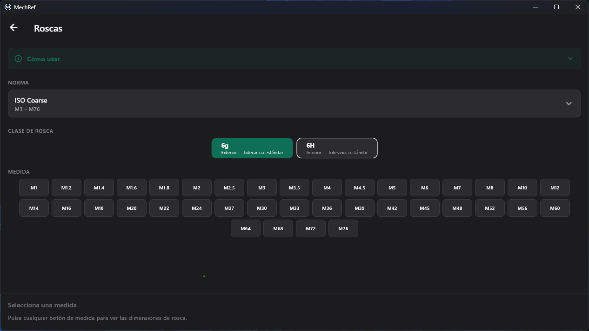
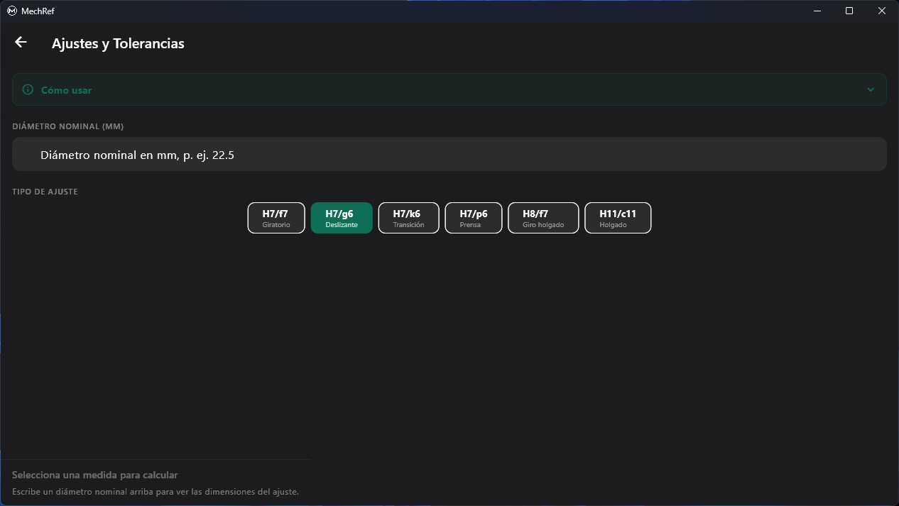
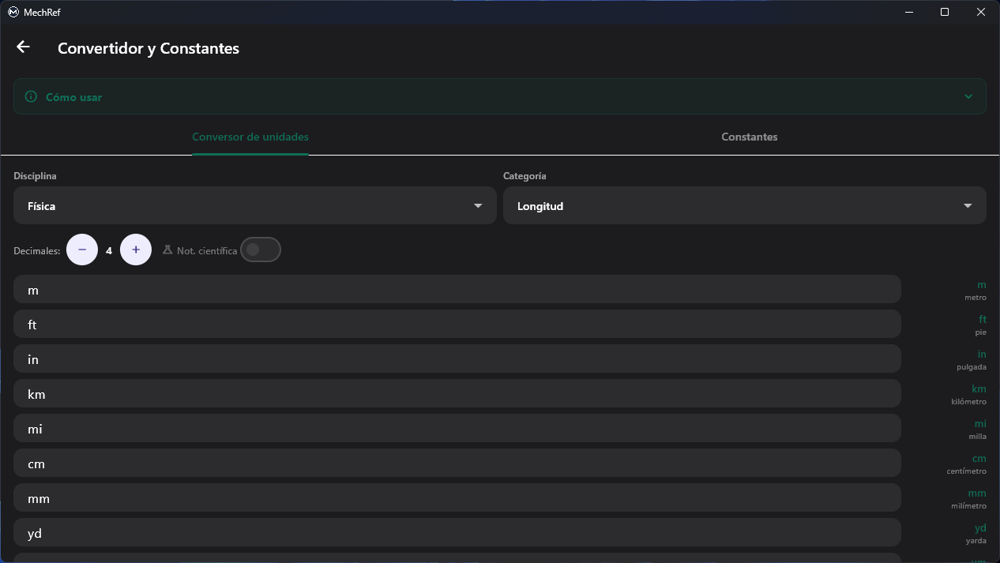
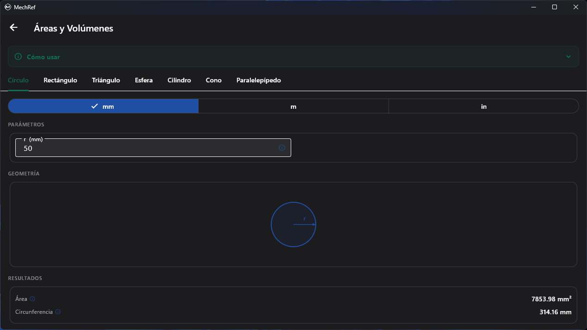
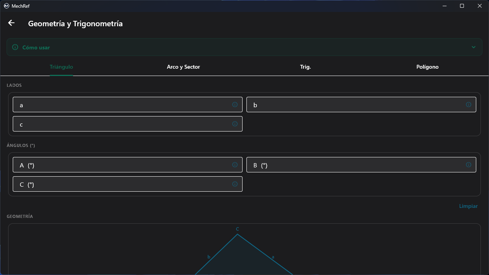
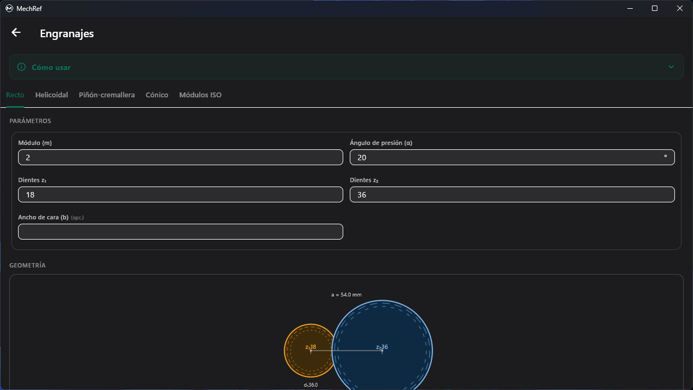
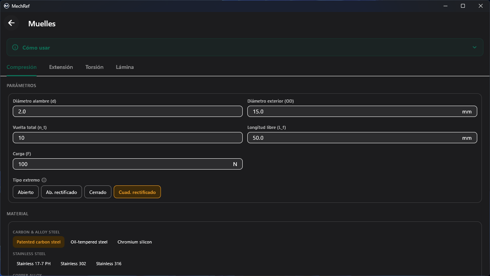
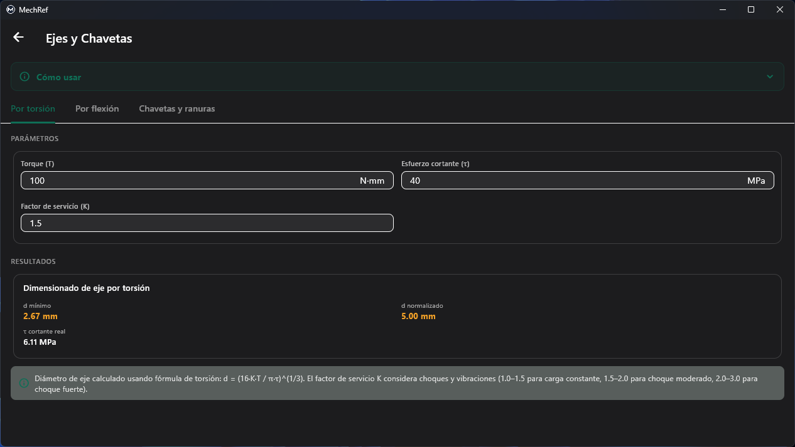
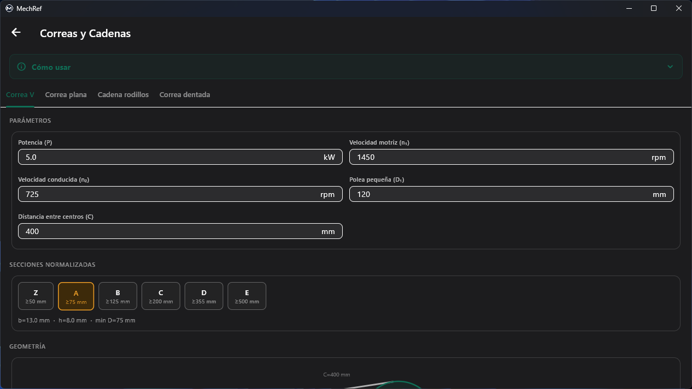
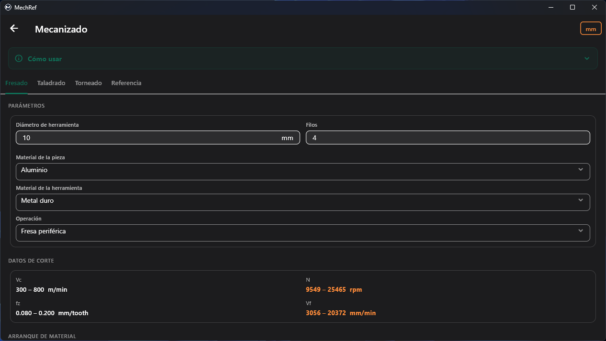

Un recorrido por cada módulo de MechRef: qué hace, cómo se ve, un ejemplo resuelto y cómo usarlo. Cuatro módulos son gratis para siempre. El resto se desbloquea con una única compra Pro. Esto es exactamente lo que obtienes, para que decidas si Pro vale la pena.
Todo lo que es gratis sigue siendo gratis: sin anuncios, sin cuenta, sin límite de tiempo. Pro es una compra única que desbloquea los seis módulos profesionales, además de las normas, disciplinas y sólidos 3D avanzados dentro de los módulos gratuitos.
| Módulo / función | Gratis | Pro |
|---|---|---|
| Módulos gratuitos — tuyos para siempre | ||
| RoscasISO métrica (paso grueso/fino), UNC, UNF | ✓ | ✓ |
| + Whitworth, BSP, NPT, ACME, Trapezoidalnormas de rosca adicionales | – | ✓ |
| Ajustes y ToleranciasISO 286-1, sistema de agujero base | ✓ | ✓ |
| Convertidor y ConstantesFísica y Mecánica · constantes Matemáticas/Físicas/Atómicas | ✓ | ✓ |
| + Mecánica de fluidos, Termodinámica, constantes de Materialesdisciplinas y constantes extra | – | ✓ |
| Áreas y Volúmenesfiguras 2D — círculo, rectángulo, triángulo | ✓ | ✓ |
| + sólidos 3D — esfera, cilindro, cono, paralelepípedovolúmenes y áreas de superficie | – | ✓ |
| Módulos Pro | ||
| Geometría y Trigonometríaresolución de triángulos, arcos, trig., polígonos | – | ✓ |
| Engranajesrecto, helicoidal, piñón-cremallera, cónico | – | ✓ |
| Muellescompresión, extensión, torsión, lámina | – | ✓ |
| Ejes y Chavetasdimensionado por torsión/flexión, chaveteros | – | ✓ |
| Correas y Cadenascorrea V, correa plana, cadena de rodillos, correa dentada | – | ✓ |
| Mecanizadofresado, taladrado, torneado, tablas de referencia | – | ✓ |
| Todo lo demás | ||
| Sin anuncios · sin suscripción · sin cuenta | ✓ | ✓ |
| Funciona sin conexión | ✓ | ✓ |
| Español e inglés | ✓ | ✓ |
| Todos los módulos Pro futuros incluidos | – | ✓ |
// Pro es una compra única: paga una vez, tuyo para siempre, con todos los módulos Pro futuros incluidos.

Consulta los datos completos de rosca para cualquier medida estándar de tornillo: paso, diámetros de flancos y de fondo, profundidad de rosca, área resistente y una broca recomendada para el macho (≈75 % de engrane). Elige una norma y una clase, y pulsa una medida.

Resuelve cualquier ajuste ISO 286-1 con sistema de agujero base. Introduce un diámetro nominal, elige un tipo de ajuste y consulta las desviaciones del agujero y del eje, las calidades IT, las medidas límite y la holgura o interferencia resultante, junto a un diagrama de tolerancias a escala.

Un conversor de unidades multicampo en vivo entre disciplinas de ingeniería, más una biblioteca de constantes físicas y de ingeniería. Escribe en cualquier campo y todas las demás unidades se recalculan al instante: sin botón de convertir, sin intercambiar.

Cálculos rápidos de área, volumen y superficie para las figuras más comunes en ingeniería, cada una con diagrama en vivo y selector mm / m / pulgada. Las figuras 2D son gratis; los sólidos 3D forman parte de Pro.

Un kit de geometría cuatro en uno: un resolutor de triángulos completo, una calculadora de arco y sector, un explorador de funciones trigonométricas y una calculadora de polígonos regulares, cada uno con diagrama en vivo.

Calcula la geometría de engranajes rectos, helicoidales, piñón-cremallera y cónicos según los módulos ISO 54: diámetros de referencia, distancia entre centros y relaciones, con un diagrama del par de engranajes en vivo mientras escribes.

Diseña y comprueba muelles de compresión, extensión, torsión y de lámina: constante, tensión cortante, deflexión y longitud sólida, con condiciones de extremo seleccionables y una biblioteca de materiales.

Dimensiona ejes por torsión o por flexión, y selecciona chavetas y chaveteros. Cada resultado muestra el diámetro mínimo, la medida normalizada más próxima, la tensión real y la fórmula empleada.

Dimensiona transmisiones por correa V, correa plana, cadena de rodillos y correa dentada: velocidades, relaciones, secciones normalizadas, longitud de correa y tensiones, con un diagrama de la transmisión.

Cálculos de velocidad de corte, velocidad de husillo, avance y arranque de material para fresado, taladrado y torneado, adaptados a tu material de pieza y de herramienta, más tablas de referencia.
Empieza hoy con los módulos gratuitos. Desbloquea el kit completo con una única compra Pro: sin suscripción, sin anuncios, y con todos los módulos Pro futuros incluidos.